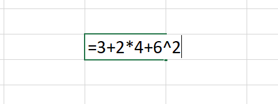
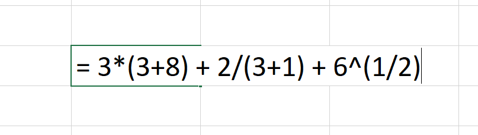
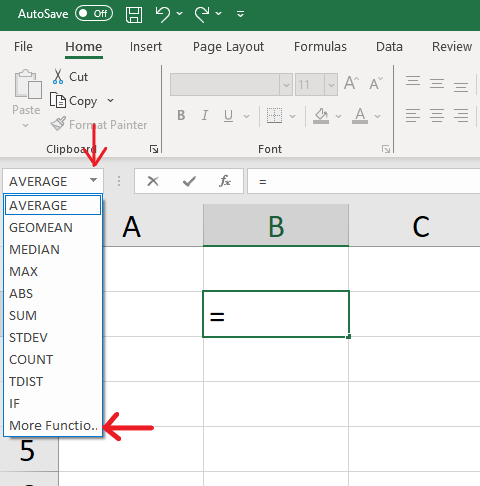
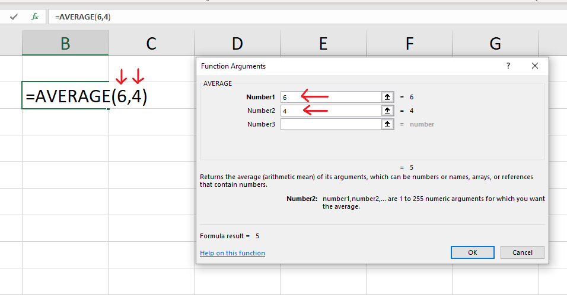
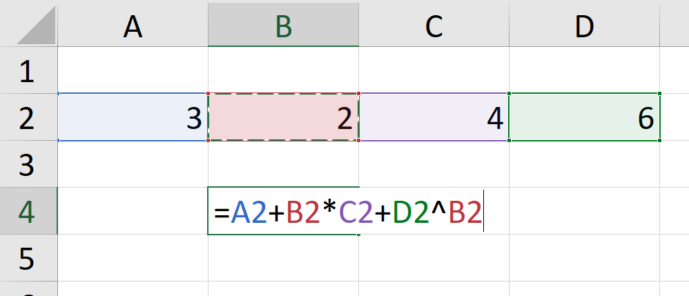
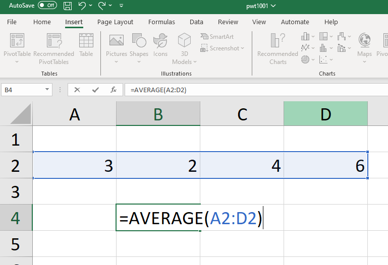

Chapter 2 Calculations in Excel
2.1 Basic arithmetic calculations
- A formula in Excel always starts with an equal sign =
- Arithmetic operators: + (addition), - (subtraction), * (multiplication), / (division), ^ (exponentiation).
- Example 1: to calculate “\(3 + 2 \times 4 + 6^2\)” in Excel, select a cell, type:  and press “Enter”.
- Example 2: to calculate “\(3 \times (3+8) + \frac{2}{3+1} + 6^{1/2}\)” in Excel, select a cell, type:  and press “Enter”.
2.2 Excel built-in functions
- For more complex operations, it will be more convenient to use the Excel built-in functions.
- To let Excel help you find the relevant function and use it, select a cell and write an equal sign. In the top left corner, a drop-down menu appears with a list of the most commonly used formulas. If the function you are looking for does not appear here, go to “More Functions” at the bottom of the menu. A search box will prompt you to describe the function you are interested in.

- Example: the function “AVERAGE” calculates the average of two or several numbers. To calculate the average of 6 and 4, enter 4 and 6 in the “Function Arguments” box or write directly “=AVERAGE(6,4)”.

2.3 Write formulas referring to values in other cells
In Excel, columns are indexed by letters and rows by numbers. Each cell therefore can be referenced by their column letter and row number. For example, “A3”, “C1”, “F6”.
Example 1: to calculate “\(3 + 2 \times 4 + 6^2\)”, it is possible to enter separately the values 3, 2, 4 and 6 into separate cells and then write a formula to perform this operation referring to the corresponding cells as follows:  where “A2” is 3, “B2” is 2, “C2” is 4 and “D2” is 6.
Example 2: to calculate the average of the four numbers used in the previous example using the AVERAGE() function, select the cells comprising the range of values you want to include in the calculation: 